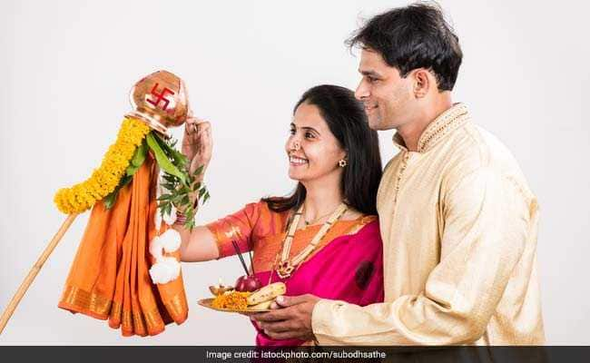

Gudi Padwa marks the Maharashtrian New Year. It is celebrated during spring and is also a harvest festival celebrated in Maharashtra and in Konkan areas. Gudi Padwa is observed in the month of Chaitra, according to the luni-solar calendar, and is considered an auspicious day that marks the New Year, celebrates the onset of spring and the reaping of Rabi crops. Maharashtrians celebrate the day by decorating their houses and also make colourful rangoli. A special Gudi flag, generally of yellow or red colour, is made and is garlanded with flowers, mango and neem leaves. It is topped with upturned silver or copper vessel signifying victory and achievement. Gudi is believed to ward off evil, invite prosperity and good luck into the house.
Street processions are also held on Gudi Padwa. Maharashtrians wear new clothes, dance, prepare festive foods like Sakkar Bhaat (sweet rice), Shrikhand and Puri, and Puran Poli, the festival is celebrated with friends and family. Traditionally, families prepare a special dish that mixes various flavors, particularly leaves of neem tree and jaggery. In Karnataka and Andhra Pradesh, the festival is celebrated as Ugadi. The day also marks the beginning of Chaitra Navratri, that lead up to Ram Navami
Historically, the Gudi symbolizes Lord Rama's victory over Ravana and the happiness and celebrations that followed. Since a symbol of victory is always held high, so is the gudi (flag). The festival commemorates the coronation of Rama post his return to Ayodhya after completing 14 years of exile.